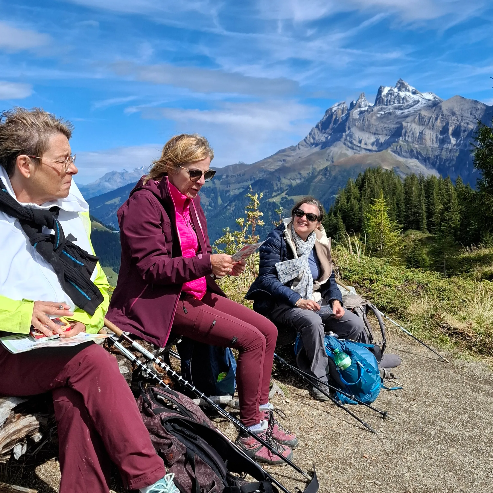
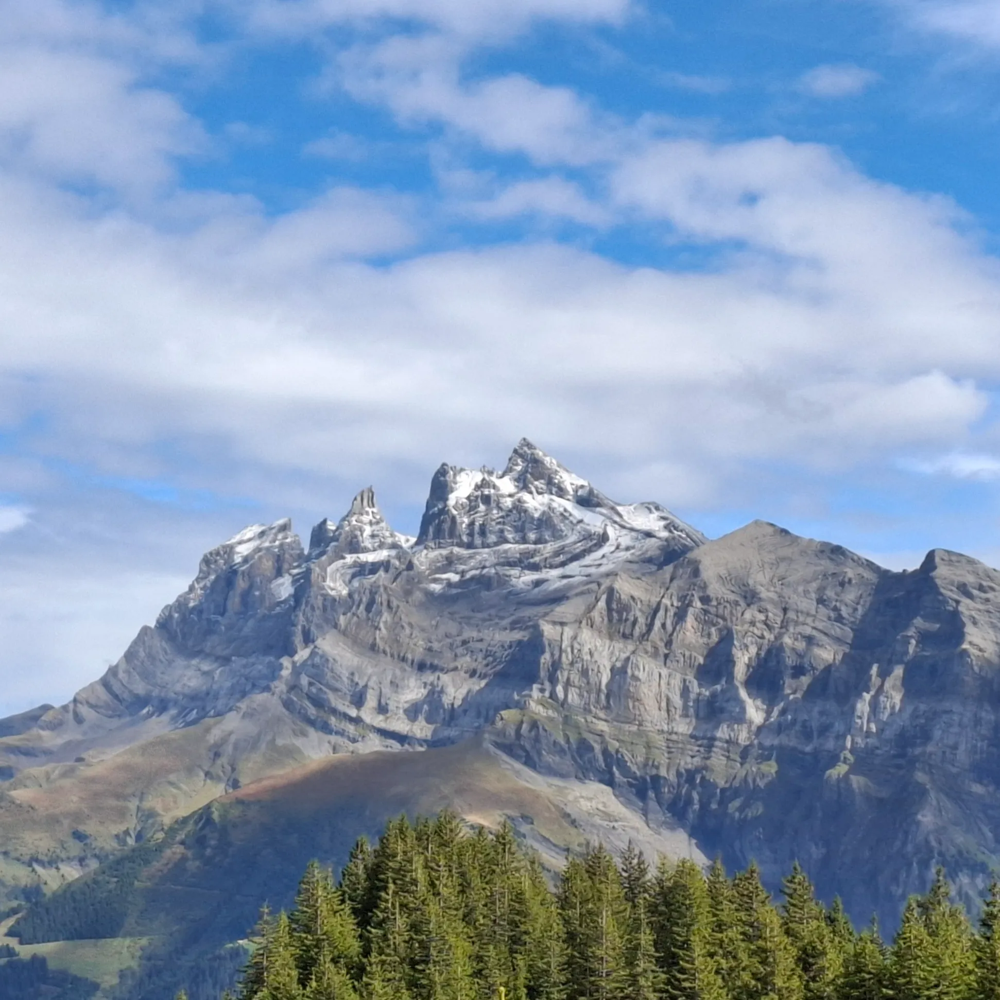
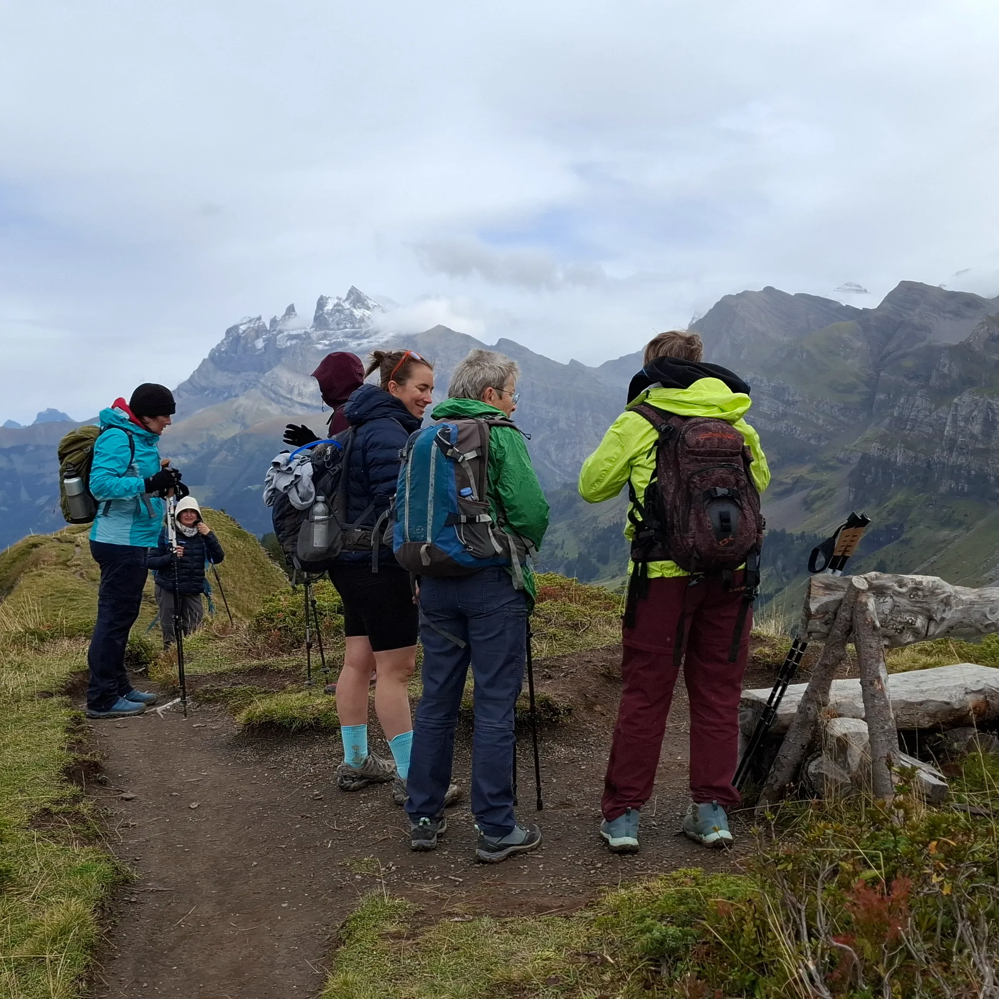
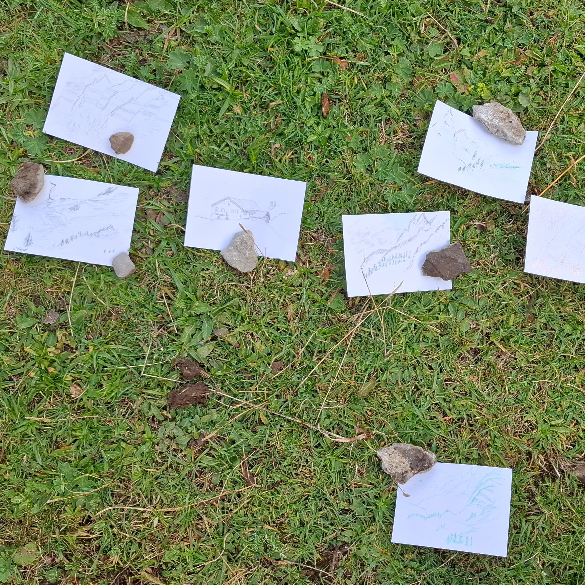
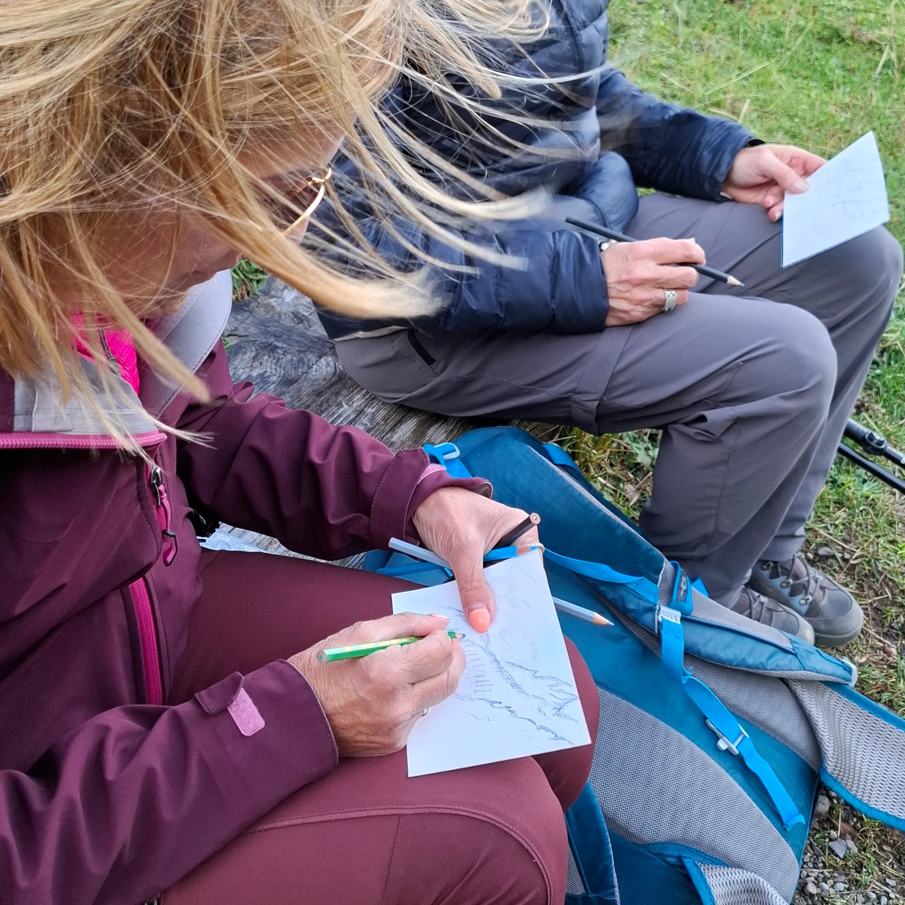
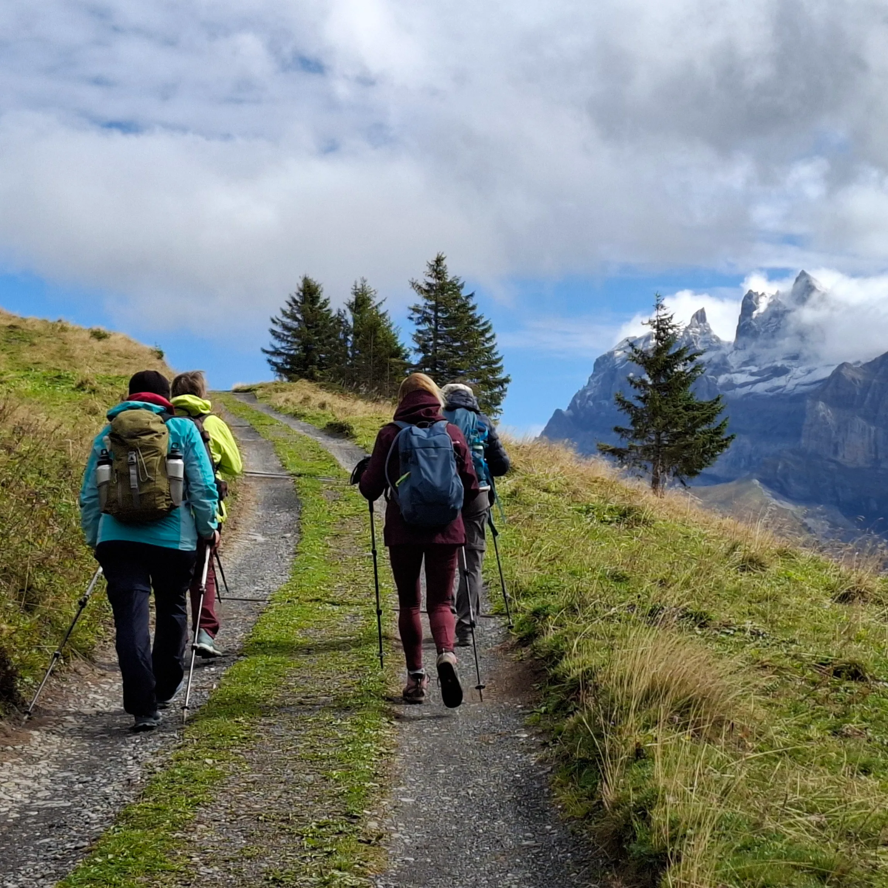

Une journée de plus dans un cadre magnifique dans le Val d'Illiez avec un groupe de femmes motivées. Nous avons découvert un petit Vallon, vu un troupeau de chamois et dessiné le paysage 🖌️
Le groupe en a appris plus sur quelques espèces d’oiseaux de la région, notamment le faucon pèlerin et le casse-noix moucheté. 🦅
Elles ont aussi eu l'occasion de découvrir des plantes de la région 🌼 telles que genévrier, achillée millefeuille ou encore euphraise. Le tout a été révisé lors du "Qui suis-je" sur le chemin du retour. 💡
Les Dents du Midi étaient le cadre parfait pour conclure cette sortie. ⛰️
Merci à toutes 😊 et merci à Passrando avec qui cette randonnée s’est organisée en collaboration.





